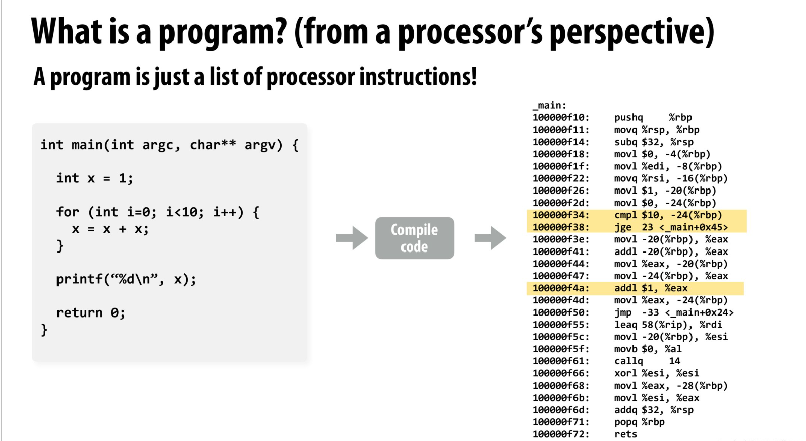
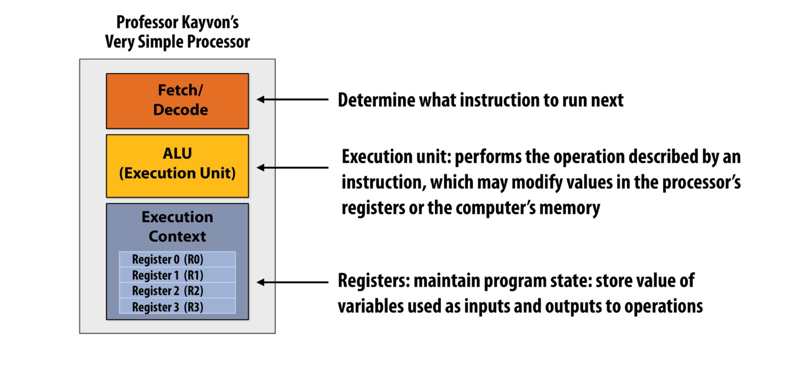
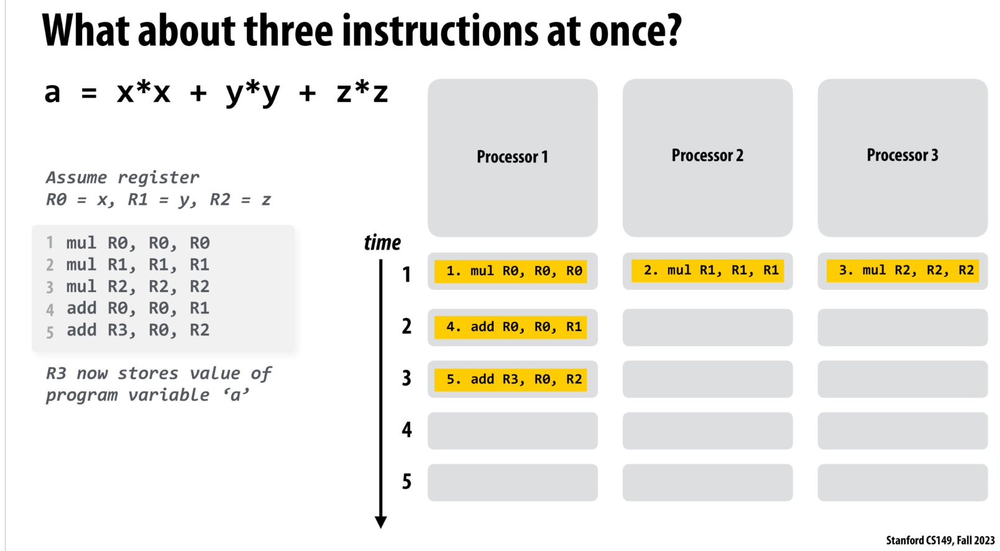

Stanford CS 149 2023 fall 课堂笔记 Lecture 1
Why Parallelism? Why Efficiency?
What is a computer program?
A programm is just a list of processor instructions!(指令集)

A processor executes instructions
处理器的简单抽象:
Fetch/Decode : 负责读取指令
ALU : 各类计算的执行的单元
Execution Context: 程序涉及的各类变量的寄存器的状态
一个时钟周期执行一条指令
Superscalar processor(超级处理器)
抽象图如下:
设计思路:
例子
如下程序以及编译后的指令集,完成该指令集只需要5个clock:
<img src=”…/../../../image/Stanford_cs149_lec1/example.png”” weight=”100%” height=”100%” title=”picture description” alt=”picture alternative description”/>
该指令集完成并行优化最多只需要2个processor
到达优化瓶颈后,可以看到哪怕3 processor也需要3 clock的次数才能完成
原因:
我的理解:上述程序所编译的指令存在逻辑上的串行化:
- 乘法可以并行,但是加法必须等乘法值算出来
- 加法涉及到的寄存器R3依赖R0, R2的值,需要等待他们更新完
SuperScalar execution
由上述程序的优化方法, 提出SuperScalar execution的概念,即希望处理器自动去找出能够并行执行的指令,这就需要多个Fetch/Decode模块,并且分配执行的AUL单元,由此获得上述Superscalar processor的设计思路
Problem
对于指令本身的依赖关系,并行的优化及其有限
后讨论我们如何设计代码,能够最大程度的利用并行计算
本博客所有文章除特别声明外，均采用 CC BY-NC-SA 4.0 许可协议。转载请注明来源 something for nothing！